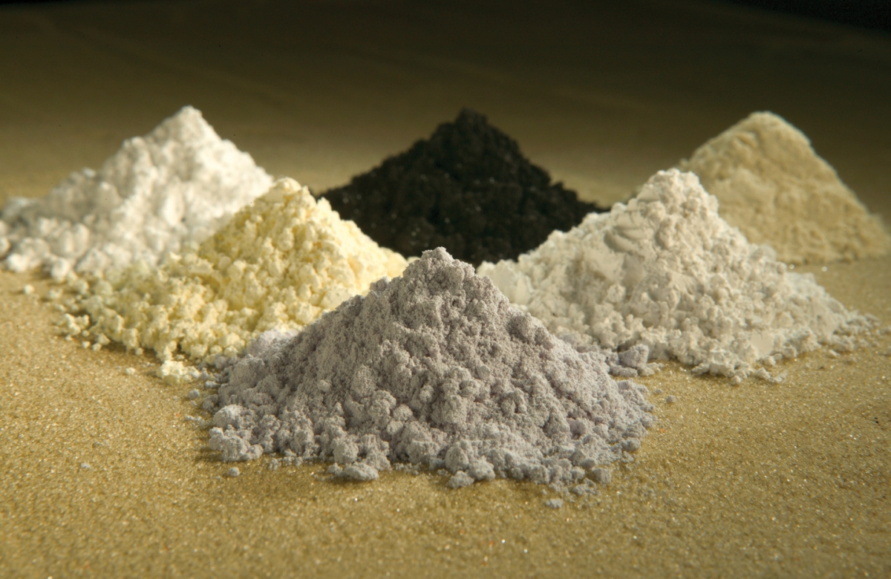
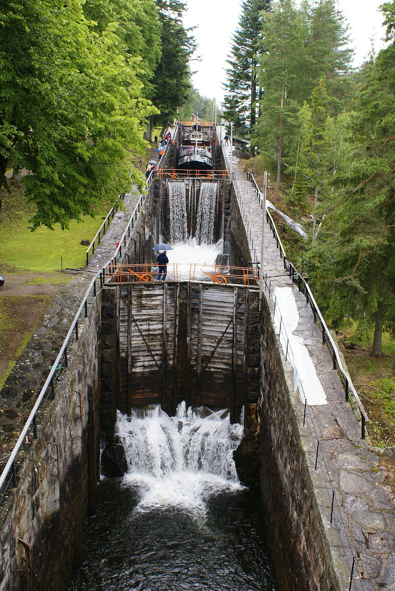
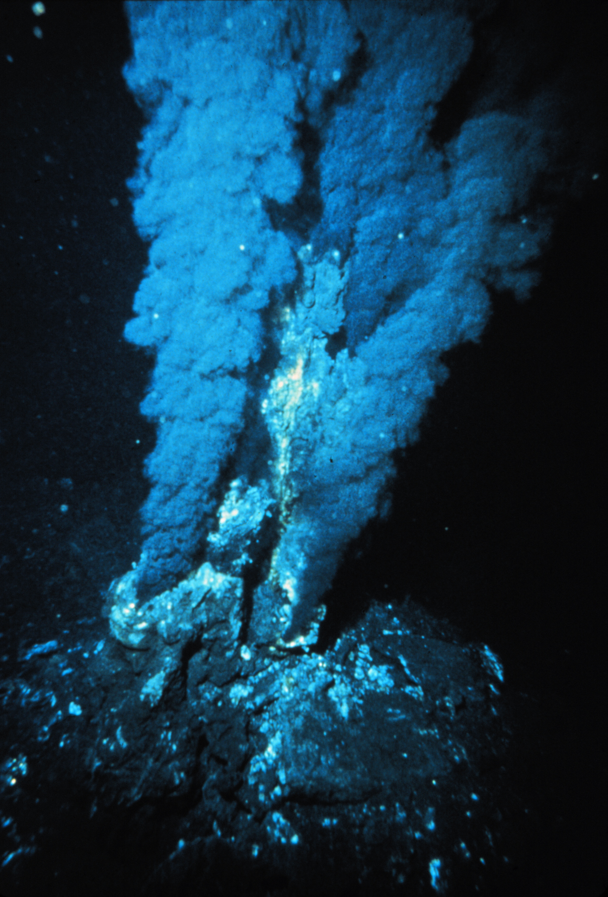
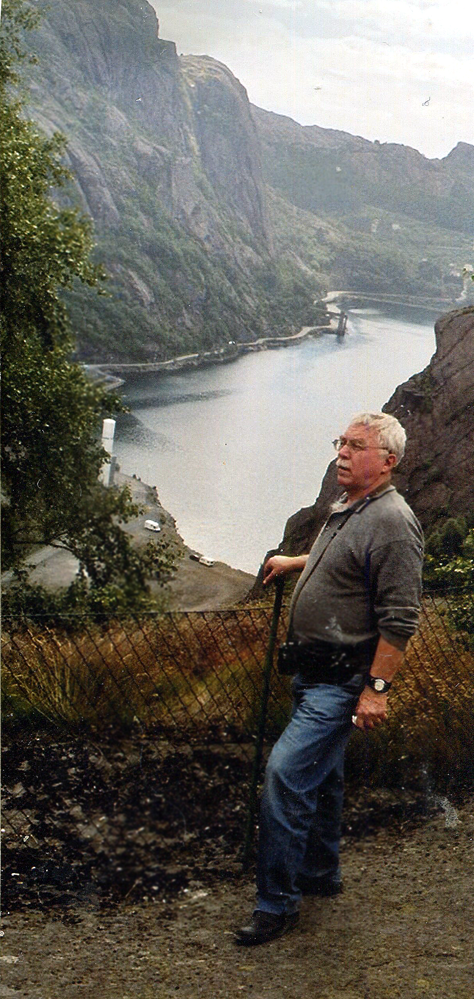

Norge: Fra energinasjon til materialstormakt
Verdens behov for energi og råvarer er i fundamental endring. Hvordan kan tre unike mineralforekomster – på Fensfeltet, på havbunnen og i Dalane – redefinere Norges økonomiske og strategiske rolle i Europa?
I over femti år har olje og gass gjort Norge til en europeisk energinasjon. Når Europa skal gjennomføre det grønne skiftet og samtidig redusere sin sårbarhet overfor autoritære regimer, trengs det enorme mengder til elbiler, vindturbiner, strømnett, batterier og matproduksjon. Norge sitter på tre av Europas mest strategiske forekomster.
Du skal lære om
- •Hvorfor det grønne skiftet skaper akutt råvaremangel og ny
- •Tre norske ressurser: Fensfeltet, havbunnsmineraler og Dalane
- •Miljøkonflikter i dyphavet og debatten om
- •Hvorfor bearbeiding og nye gir større verdi enn råvareeksport
Tenk over
- Hvorfor trenger en elbil og en vindturbin mye mer mineraler enn fossil energi?
- Bør Norge hente opp mineraler fra havbunnen hvis miljøkonsekvensene er usikre?
- Hva er forskjellen på å selge råstein til utlandet og å bygge industri i Norge?
Det grønne skiftets propp og geopolitikk
Kort fortalt
Verden har forpliktet seg til en elektrisk framtid, men mangler byggeklossene. Det internasjonale energibyrået (IEA) anslår at etterspørselen etter kritiske mineraler må seksdobles innen 2040 for å nå klimamålene – samtidig som Kina dominerer verdikjedene.
Grønne ambisjoner møter råvaremangel
Modell fra kilden: Elektrifisering krever langt mer mineraler enn dagens produksjon leverer.
IEA anslår at etterspørselen etter kritiske mineraler vil seksdobles innen 2040 for å nå globale klimamål.
Etter gasskrisen med Russland i 2022 har EU fått nulltoleranse for å havne i en ny, farlig avhengighet. I dag kontrollerer Kina størstedelen av både utvinning og av og permanentmagneter – materialer som er helt avgjørende for europeisk høyteknologi og forsvarsindustri.
Samtidig er Europa avhengig av import av fra Marokko, Russland og Kina for sin matsikkerhet. Som svar vedtok EU i 2024 loven Critical Raw Materials Act (CRMA), med mål om at Europa innen 2030 skal utvinne minst 10 %, prosessere 40 % og resirkulere 25 % av eget forbruk av strategiske råvarer – og ikke være avhengig av ett enkelt tredjeland for mer enn 65 %.
⚡ Super-sammendrag · Råvaremangel & geopolitikk
Det grønne skiftet krever seks ganger mer kritiske mineraler innen 2040. Etter Russlands gasskutt vil EU bryte Kinas monopol på sjeldne jordarter og redusere importavhengigheten av fosfat gjennom økt europeisk produksjon.
Fensfeltet: Sjeldne jordarter i Telemark


På Fensfeltet i Nome kommune i Telemark ligger Europas største bekreftede forekomst av . Feltet er rikt på nøkkelmetallene neodym og praseodym, som brukes til å lage kraftige permanentmagneter i elbilmotorer, vindturbiner og forsvarsteknologi. Uten disse stopper Europas grønne industri opp.
Oppdaterte funntall (2024–2026): I 2024 anslo selskapet Rare Earths Norway forekomsten på sin del av feltet til 8,8 millioner tonn sjeldne jordartsoksider. Etter nye boringer ble dette i mars 2026 oppjustert til hele 15,9 millioner tonn (i tillegg kommer rundt 1,2 millioner tonn hos Saga Rare Earths). Selskapet planlegger underjordisk gruvedrift («Invisible Mine») med tilbakefylling av masser for å skåne lokalmiljøet og naturen rundt Norsjø. Målet er å kunne dekke opptil 10 % av Europas behov allerede fra 2030-tallet.
⚡ Super-sammendrag · Fensfeltet
Fensfeltet i Telemark er Europas største forekomst av sjeldne jordarter (oppjustert til 15,9 mill. tonn i 2026), helt avgjørende for magneter i elbiler og vindturbiner og for å bryte Kinas monopol.
Havbunnsmineraler på norsk sokkel

På dyphavsbunnen i Norskehavet og Grønlandshavet finnes massive sulfider og manganskorper rike på kobber, sink, kobolt og gull. Slike basemetaller trengs i enorme mengder til batterier og utbygging av strømnett, og verden styrer mot et stort underskudd på kobber. Rystad Energy har anslått en teoretisk bruttoverdi på rundt 1 000 milliarder kroner (og rundt 20 milliarder kroner i årlig netto verdiskaping i et høyt scenario).
Politisk strid og miljøkonflikt: I januar 2024 vedtok et flertall på Stortinget (Ap, Sp, Høyre og FrP) å åpne deler av sokkelen for en kartleggings- og letefase. Men forskere, miljøbevegelsen (WWF, Naturvernforbundet) og EU har advart sterkt mot ukjent miljørisiko for sårbare dyphavsøkosystemer og presset på for et internasjonalt (midlertidig forbud). Etter budsjettforhandlinger med SV (2024–2025) ble den første konsesjonsrunden utsatt og satt på politisk pause, samtidig som myndighetene har jobbet videre med miljøforskrifter.
⚡ Super-sammendrag · Havbunnsmineraler
Norsk sokkel har enorme mengder kobber og kobolt, men stor usikkerhet rundt dyphavsnaturen har ført til press fra EU og miljøvernere om et moratorium og politisk utsettelse av konsesjonsrunden.
Dalane: Mat- og energisikkerhet i Rogaland

I Dalane-regionen i Rogaland (Bjerkreim-Sokndal / Storeknuten) undersøker selskapet Norge Mining det som kan være verdens største forekomst av , titan og . Tidlige geologiske anslag på 70 milliarder tonn gjelder det totale volumet av stein i hele bergartskroppen, mens de konkrete, sertifiserte malmressursene det jobbes med (som Storeknuten) utgjør flere milliarder tonn.
🌾 Matsikkerhet (Fosfat)
Fosfat er uerstattelig i kunstgjødsel for global matproduksjon, og er også en nøkkelkomponent i moderne LFP-batterier. Å utvinne fosfat i Norge kan gi Europa økt og redusere avhengigheten av Marokko og Russland.
🔋 Energisikkerhet (Vanadium & Titan)
Vanadium styrker stål og spås en stor framtid i stasjonære batterier for lagring av sol- og vindkraft. Titan brukes i fly, vindturbiner og høyteknologi. Også i Dalane er det lokal debatt om arealbruk, miljø og deponering.
⚡ Super-sammendrag · Dalane
Dalane i Rogaland har enorme forekomster av fosfat (kunstgjødsel og LFP-batterier), titan og vanadium (stasjonære batterier) – avgjørende for både europeisk matsikkerhet og energilagring.
Tre typer kritikalitet & nye verdikjeder
Tre typer kritikalitet
Fra råstein til høyteknologi
Den største verdiskapingen ligger ikke i å eksportere råstein, men i å bygge industri i Norge:
Sammen danner de tre ressursene en unik portefølje: Dalane er eksistensielt kritisk (mat og batterier), Fensfeltet er teknologisk kritisk (magneter), og havbunnsmineraler er volum-kritiske (kobber til elektrifisering).
Hvis Norge klarer å kombinere ren vannkraft med bearbeiding av egne mineraler, kan landet gå fra å være Europas gassleverandør til å bli EUs uunnværlige strategiske partner for både energi og materialer – med høyere sikkerhetspolitisk innflytelse og nye industriarbeidsplasser i hele verdikjeden.
⚡ Super-sammendrag · Verdikjeder & maktposisjon
Den største gevinsten ligger i å bearbeide mineraler til metaller (5× verdi) og ferdige magneter/batterier (20× verdi) i Norge. Slik kan Norge bli EUs viktigste partner for både energi og kritiske materialer.
Test deg selv & diskuter
Kontrollspørsmål
Velg riktig svar på oppgavene under.
Reflekter og diskuter
- Bør Norge åpne for gruvedrift på havbunnen for å skaffe kobber og kobolt til det grønne skiftet, eller bør vi innføre et moratorium slik EU og miljøbevegelsen krever?
- Hvilke fordeler og ulemper kan gruvedrift på Fensfeltet og i Dalane få for lokalsamfunnene i Nome og Rogaland?
- Sammenlign med Fosen-saken i kapittel 1: Hvilke likheter ser du mellom konflikten om vindkraft og konflikten om mineralutvinning?
Sammendrag & Ordliste
Hovedpunkter fra kapittelet
- ✓IEA anslår at etterspørselen etter kritiske mineraler seksdobles innen 2040, og EU ønsker å bryte Kinas dominans gjennom Critical Raw Materials Act.
- ✓Fensfeltet i Telemark har Europas største forekomst av sjeldne jordarter (15,9 mill. tonn REE-oksider), viktige for elbiler og vindturbiner.
- ✓Havbunnsmineraler på norsk sokkel rommer store mengder kobber og kobolt, men konsesjonsrunden er satt på politisk pause på grunn av miljørisiko og strid om moratorium.
- ✓Dalane i Rogaland har store forekomster av fosfat (matsikkerhet), titan og vanadium (energilagring).
Viktige fagbegreper (Ordliste)
Kilder
Faglige og offentlige kilder
- Presentasjon: Norge: Fra Energinasjon til Materialstormakt (vedlagt kildegrunnlag).
- Norges geologiske undersøkelse (NGU) – oversikter over kritiske mineraler på Fensfeltet og i Dalane.
- Stortinget & Energidepartementet (2024–2025). Vedtak og forskrifter om havbunnsmineraler på norsk sokkel.
- EU (2024). Critical Raw Materials Act (CRMA).
Analyser og nyhetskilder
- International Energy Agency (IEA). The Role of Critical Minerals in Clean Energy Transitions.
- Teknisk Ukeblad / Geo365 (2024–2026). Oppdaterte ressursestimater for Rare Earths Norway (Fensfeltet) og Norge Mining (Dalane).
- Rystad Energy & Menon Economics – verdianslag for norske mineralressurser.
- Wikimedia Commons / NOAA – åpne lisensierte fotografier.